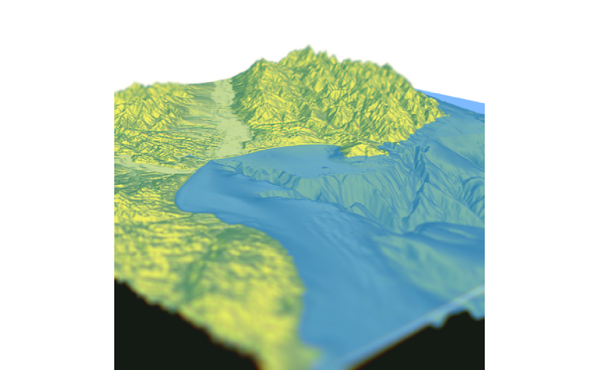
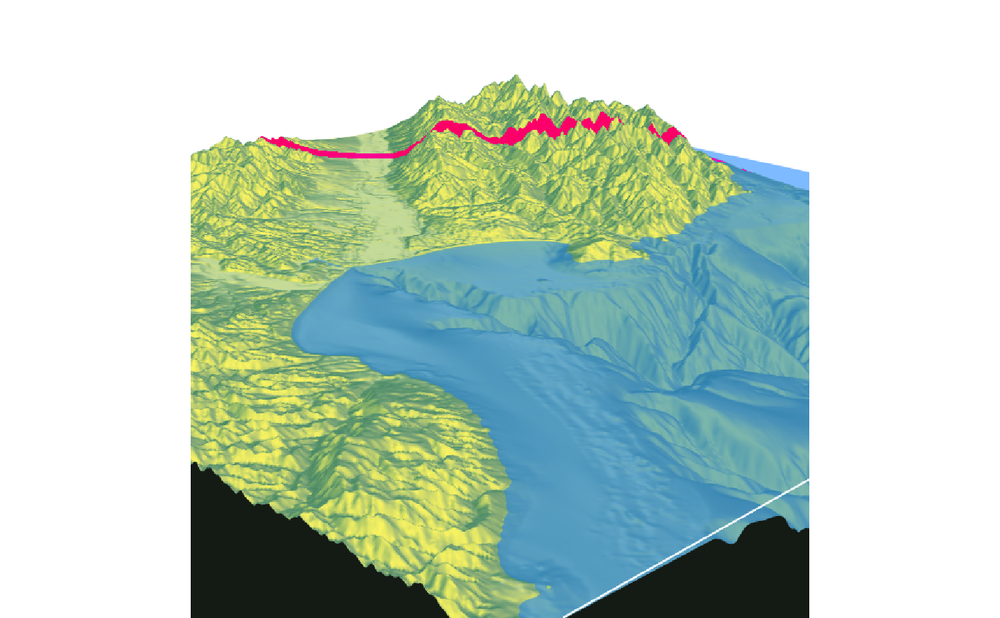
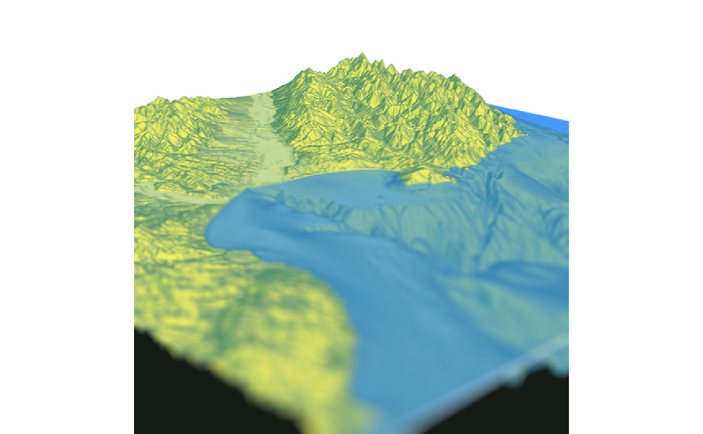
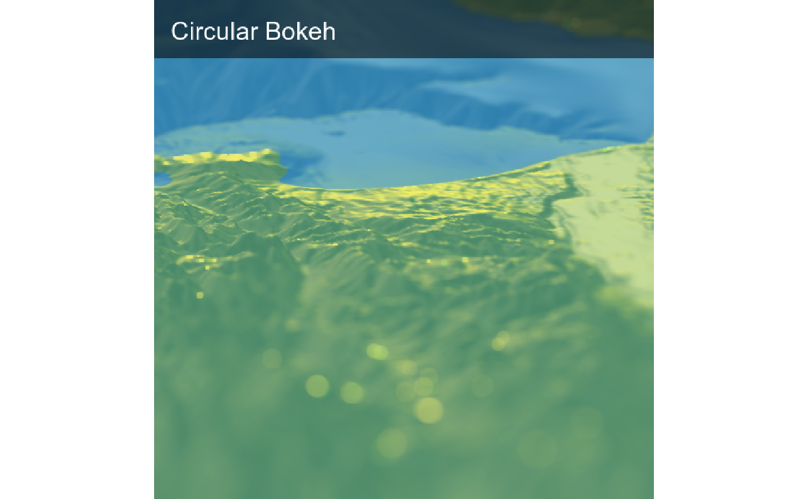
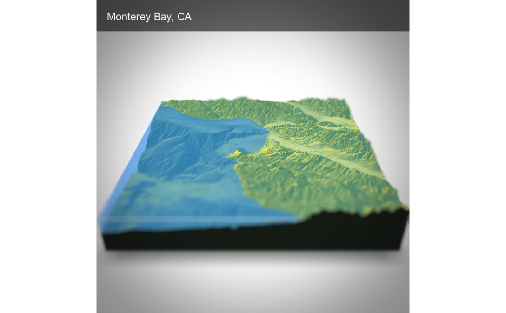

Adds depth of field to the current RGL scene by simulating a synthetic aperture.
The size of the circle of confusion is determined by the following formula (z_depth is from the image's depth map).
abs(z_depth-focus)*focal_length^2/(f_stop*z_depth*(focus - focal_length))
render_depth( focus = 0.5, focallength = 100, fstop = 4, filename = NULL, preview_focus = FALSE, bokehshape = "circle", bokehintensity = 1, bokehlimit = 0.8, rotation = 0, gamma_correction = TRUE, aberration = 0, transparent_water = FALSE, heightmap = NULL, zscale = NULL, title_text = NULL, title_offset = c(20, 20), title_color = "black", title_size = 30, title_font = "sans", title_bar_color = NULL, title_bar_alpha = 0.5, title_position = "northwest", image_overlay = NULL, vignette = FALSE, progbar = interactive(), instant_capture = interactive(), clear = FALSE, bring_to_front = FALSE, ... )
Arguments
| focus | Defaults `0.5`. Depth in which to blur. Minimum 0, maximum 1. |
|---|---|
| focallength | Default `1`. Focal length of the virtual camera. |
| fstop | Default `1`. F-stop of the virtual camera. |
| filename | The filename of the image to be saved. If this is not given, the image will be plotted instead. |
| preview_focus | Default `FALSE`. If `TRUE`, a red line will be drawn across the image showing where the camera will be focused. |
| bokehshape | Default `circle`. Also built-in: `hex`. The shape of the bokeh. |
| bokehintensity | Default `3`. Intensity of the bokeh when the pixel intensity is greater than `bokehlimit`. |
| bokehlimit | Default `0.8`. Limit after which the bokeh intensity is increased by `bokehintensity`. |
| rotation | Default `0`. Number of degrees to rotate the hexagon bokeh shape. |
| gamma_correction | Default `TRUE`. Controls gamma correction when adding colors. Default exponent of 2.2. |
| aberration | Default `0`. Adds chromatic aberration to the image. Maximum of `1`. |
| transparent_water | Default `FALSE`. If `TRUE`, depth is determined without water layer. User will have to re-render the water layer with `render_water()` if they want to recreate the water layer. |
| heightmap | Default `NULL`. The height matrix for the scene. Passing this will allow `render_depth()` to automatically redraw the water layer if `transparent_water = TRUE`. |
| zscale | Default `NULL`. The zscale value for the heightmap. Passing this will allow `render_depth()` to automatically redraw the water layer if `transparent_water = TRUE`. |
| title_text | Default `NULL`. Text. Adds a title to the image, using magick::image_annotate. |
| title_offset | Default `c(20,20)`. Distance from the top-left (default, `gravity` direction in image_annotate) corner to offset the title. |
| title_color | Default `black`. Font color. |
| title_size | Default `30`. Font size in pixels. |
| title_font | Default `sans`. String with font family such as "sans", "mono", "serif", "Times", "Helvetica", "Trebuchet", "Georgia", "Palatino" or "Comic Sans". |
| title_bar_color | Default `NULL`. If a color, this will create a colored bar under the title. |
| title_bar_alpha | Default `0.5`. Transparency of the title bar. |
| title_position | Default `northwest`. Position of the title. |
| image_overlay | Default `NULL`. Either a string indicating the location of a png image to overlay over the image (transparency included), or a 4-layer RGBA array. This image will be resized to the dimension of the image if it does not match exactly. |
| vignette | Default `FALSE`. If `TRUE` or numeric, a camera vignetting effect will be added to the image. `1` is the darkest vignetting, while `0` is no vignetting. If vignette is a length-2 vector, the second entry will control the blurriness of the vignette effect. |
| progbar | Default `TRUE` if in an interactive session. Displays a progress bar. |
| instant_capture | Default `TRUE` if interactive, `FALSE` otherwise. If `FALSE`, a slight delay is added before taking the snapshot. This can help stop prevent rendering issues when running scripts. |
| clear | Default `FALSE`. If `TRUE`, the current `rgl` device will be cleared. |
| bring_to_front | Default `FALSE`. Whether to bring the window to the front when rendering the snapshot. |
| ... | Additional parameters to pass to magick::image_annotate. |
Value
4-layer RGBA array.
Examples
# \donttest{ montereybay %>% sphere_shade() %>% plot_3d(montereybay,zscale=50, water=TRUE, waterlinecolor="white", zoom=0.3,theta=-135,fov=70, phi=20) #Preview where the focal plane lies render_depth(focus=0.75, preview_focus=TRUE)#>#Render the depth of field effect render_depth(focus=0.75, focallength = 100)#Add a chromatic aberration effect render_depth(focus=0.75, focallength = 100, aberration = 0.3)#Render the depth of field effect, ignoring water and re-drawing the waterlayer render_depth(focus=0.9, preview_focus=TRUE, heightmap = montereybay, zscale=50, transparent_water=TRUE)#>render_depth(focus=0.9, heightmap = montereybay, zscale=50, transparent_water=TRUE)rgl::rgl.close() montereybay %>% sphere_shade() %>% plot_3d(montereybay,zscale=50, water=TRUE, waterlinecolor="white", zoom=0.7,phi=30,fov=60,theta=-90) render_camera(theta=45,zoom=0.15,phi=20) #Change the bokeh shape and intensity render_depth(focus=0.7, bokehshape = "circle",focallength=300,bokehintensity=30, title_text = "Circular Bokeh", title_size = 30, title_color = "white", title_bar_color = "black")render_depth(focus=0.7, bokehshape = "hex",focallength=300,bokehintensity=30, title_text = "Hexagonal Bokeh", title_size = 30, title_color = "white", title_bar_color = "black")#Add a title and vignette effect. render_camera(theta=0,zoom=0.7,phi=30) render_depth(focus = 0.75,focallength = 100, title_text = "Monterey Bay, CA", title_size = 20, title_color = "white", title_bar_color = "black", vignette = TRUE)